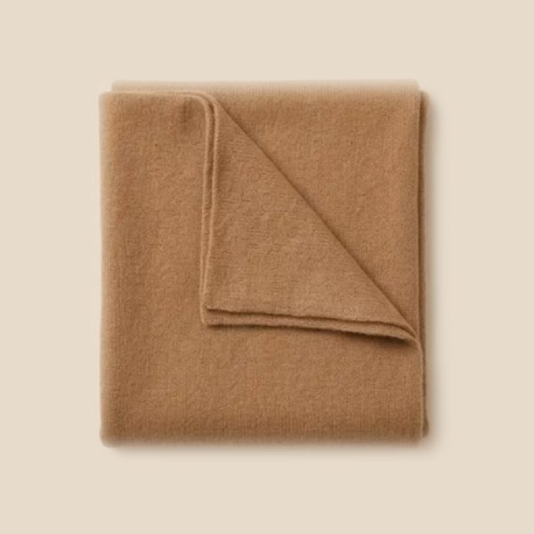

Wedding guest accessories: a simple guide
Being a wedding guest means looking polished for many hours: the ceremony, photos, dinner and dancing. The right accessories make even a simple dress look special. The key is choosing pieces that are elegant, comfortable and easy to carry.
Disclosure: this page contains Amazon affiliate links. As an Amazon Associate I earn from qualifying purchases, at no extra cost to you.
1. A small evening bag
A clutch or mini bag is all you need. It should fit your phone, a lipstick, keys, a card and a few tissues. Choose one with a detachable chain strap so your hands are free while you eat or dance. Metallic, satin and soft neutral shades go with almost any outfit.
Shop evening clutches on Amazon
2. Jewelry: pick one focus
Choose one piece to be the star and keep the rest simple. With statement earrings, skip the necklace. With a bold necklace, wear small studs. A low-cut neckline suits a pendant; a high or busy neckline looks best with earrings alone. Pearls and fine gold-tone pieces look elegant at day and evening weddings alike.
Shop statement earrings on Amazon
3. A wrap for cooler moments
Outdoor ceremonies, air-conditioned halls and late nights can get cold. A light pashmina or wrap in a color from your outfit (or a soft neutral) keeps you warm without hiding your look. For religious ceremonies, it can also cover your shoulders when needed.

4. Shoes you can stand in
Block heels, low heels and elegant flats look just as good in photos as high stilettos, and you'll still be comfortable at midnight. For garden or grass venues, avoid thin heels that sink. Many guests bring a pair of foldable flats in their bag for the dancing.
Shop block-heel sandals on Amazon
5. Small extras that help
- Hair clips or a simple headband in gold, pearl or velvet to finish an updo.
- A slim belt to give shape to a loose dress.
- Sunglasses for daytime outdoor ceremonies (take them off for photos).
Shop hair clips and headbands on Amazon
What to avoid
Skip anything white or ivory that could read as bridal, very large bags, and jewelry that catches on lace or chiffon. When in doubt, simpler always looks more elegant.
Shop by style
More ideas to compare on Amazon: